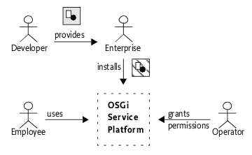
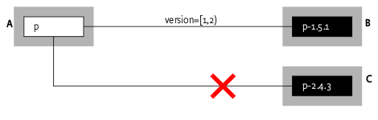
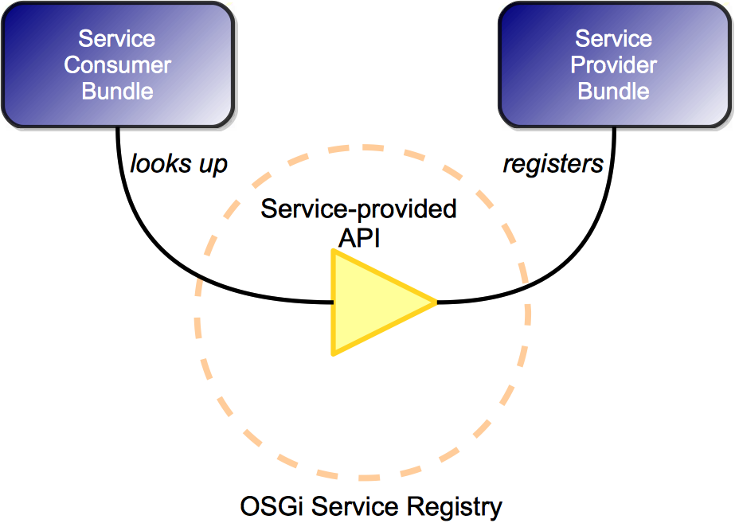
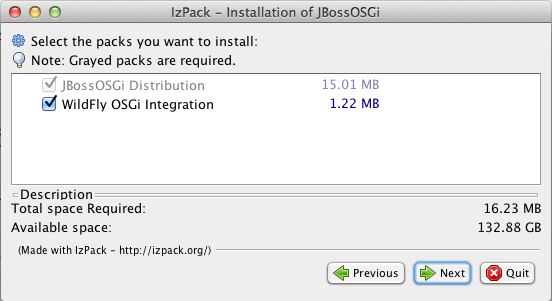
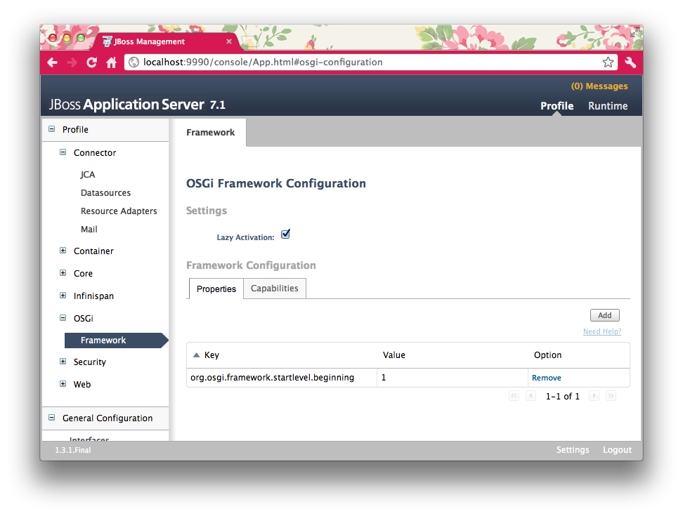
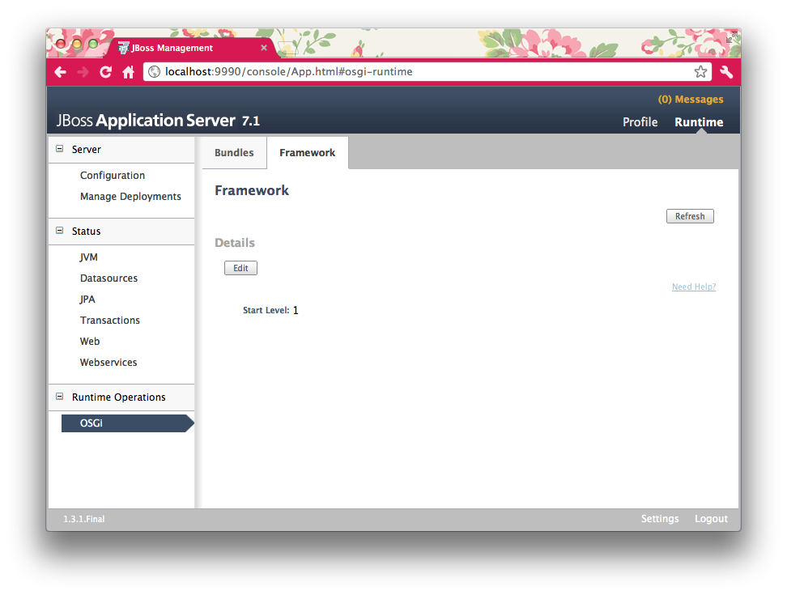
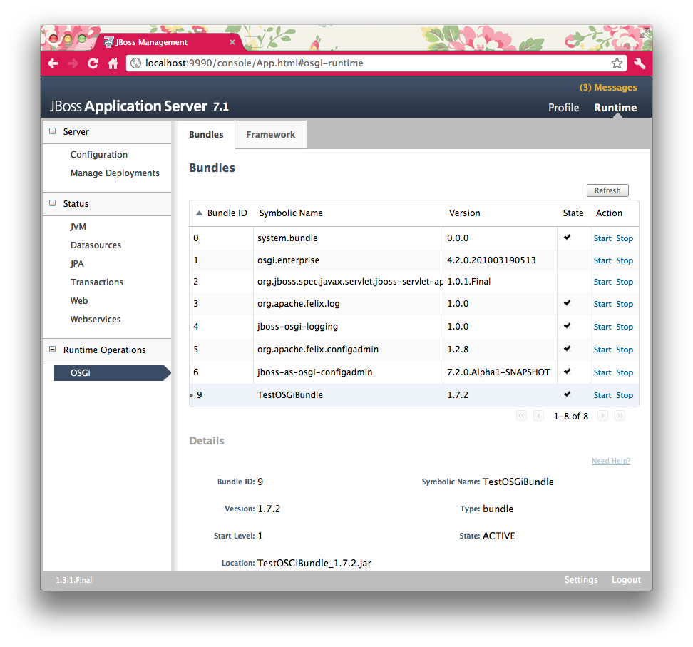

JBoss OSGi
JBoss OSGiImport-Package: com.acme.foo;version="[1.23, 2)", com.acme.bar;version="[4.0, 5.0)"
Introduction
What is OSGi
The OSGi specifications define a standardized, component-oriented, computing environment for networked services that is the foundation of an enhanced service-oriented architecture.
Developing on the OSGi platform means first creating your OSGi bundles, then deploying them in an OSGi Framework.
What does OSGi offer to Java developers?
OSGi modules provide classloader semantics to partially expose code that can then be consumed by other modules. The implementation details of a module, although scoped public by the Java programming language, remain private to the module. On top of that you can install multiple versions of the same code and resolve dependencies by version and other criteria. OSGi also offers advanced lifecycle and services layers, which are explained in more detail further down.
What kind of applications benefit from OSGi?
Any application that is designed in a modular fashion where it is necessary to start, stop, update individual modules with minimal impact on other modules. Modules can define their own transitive dependencies without the need to resolve these dependencies at the container level.
OSGi Framework Overview
The functionality of the Framework is divided in the following layers:
-
Security Layer (optional)
-
Module Layer
-
Life Cycle Layer
-
Service Layer
-
Actual Services

Source: OSGi Alliance
OSGi Security Layer
The OSGi Security Layer is an optional layer that underlies the OSGi Service Platform. The layer is based on the Java 2 security architecture. It provides the infrastructure to deploy and manage applications that must run in fine grained controlled environments.
The OSGi Service Platform can authenticate code in the following ways:
-
By location
-
By signer
For example, an Operator can grant the ACME company the right to use networking on their devices. The ACME company can then use networking in every bundle they digitally sign and deploy on the Operator’s device. Also, a specific bundle can be granted permission to only manage the life cycle of bundles that are signed by the ACME company.

Source: OSGi Alliance
The current version of JBoss OSGi does not provide this optional layer. If you would like to see this implemented, let us know on the forums: http://community.jboss.org/en/jbossosgi.
OSGi Module Layer
The OSGi Module Layer provides a generic and standardized solution for Java modularization. The Framework defines a unit of modularization, called a bundle. A bundle is comprised of Java classes and other resources, which together can provide functions to end users. Bundles can share Java packages among an exporter bundle and an importer bundle in a well-defined way.
Once a Bundle is started, its functionality is provided and services are exposed to other bundles installed in the OSGi Service Platform. A bundle carries descriptive information about itself in the manifest file that is contained in its JAR file. Here are a few important Manifest Headers defined by the OSGi Framework:
-
Bundle-Activator - class used to start, stop the bundle
-
Bundle-SymbolicName - identifies the bundle
-
Bundle-Version - specifies the version of the bundle
-
Export-Package - declaration of exported packages
-
Import-Package - declaration of imported packages
The notion of OSGi Version Range describes a range of versions using a mathematical interval notation. For example
With the OSGi Class Loading Architecture many bundles can share a single virtual machine (VM). Within this VM, bundles can hide packages and classes from other bundles, as well as share packages with other bundles.

Source: OSGi Alliance
For example, the following import and export definition resolve correctly because the version range in the import definition matches the version in the export definition:
A: Import-Package: p; version="[1,2)"
B: Export-Package: p; version=1.5.1

Source: OSGi Alliance
Apart from bundle versions, OSGi Attribute Matching is a generic mechanism to allow the importer and exporter to influence the matching process in a declarative way. For example, the following statements will match.
A: Import-Package: com.acme.foo;company=ACME
B: Export-Package: com.acme.foo;company=ACME; security=false
An exporter can limit the visibility of the classes in a package with the include and exclude directives on the export definition.
Export-Package: com.acme.foo; include:="Qux*,BarImpl"; exclude:=QuxImpl
OSGi Life Cycle Layer
The Life Cycle Layer provides an API to control the security and life cycle operations of bundles.
A bundle can be in one of the following states:

Source: OSGi Alliance
A bundle is activated by calling its Bundle Activator object, if one exists. The BundleActivator interface defines methods that the Framework invokes when it starts and stops the bundle.
A Bundle Context object represents the execution context of a single bundle within the OSGi Service Platform, and acts as a proxy to the underlying Framework. A Bundle Context object is created by the Framework when a bundle is started. The bundle can use this private BundleContext object for the following purposes:
-
Installing new bundles into the OSGi environment
-
Interrogating other bundles installed in the OSGi environment
-
Obtaining a persistent storage area
-
Retrieving service objects of registered services
-
Registering services in the Framework service
-
Subscribing or unsubscribing to Framework events
OSGi Service Layer
The OSGi Service Layer defines a dynamic collaborative model that is highly integrated with the Life Cycle Layer. The service model is a publish, find and bind model. A service is a normal Java object that is registered under one or more Java interfaces with the service registry. OSGi services are dynamic, they can come and go at any time. OSGi service consumers, when written correctly, can deal with this dynamicity. This means that OSGi services provide the capability to create a highly adaptive application which, when written using services, can even be updated at runtime without taking the service consumers down.
The OSGi Declarative Services and OSGi Blueprint specifications significantly simplify the use of OSGi Services which means that a consumer gets the benefits of a dynamic services model for very little effort.

OSGi Services
OSGi Service Compendium
The OSGi Service Compendium is described in the OSGi Compendium and Enterprise specifications. It specifies a number of services that may be available in an OSGi runtime environment. Although the OSGi Core Framework specification is useful in itself already, it only defines the OSGi core infrastructure. The services defined in the compendium specification define the scope and functionality of some common services that bundle developers might want to use. Here is a quick summary of the popular ones:
Log Service
Chapter 101 in the Compendium and Enterprise specifications.
The Log Service provides a general purpose message logger for the OSGi Service Platform. It consists of two services, one for logging information and another for retrieving current or previously recorded log information.
The JBoss OSGi Framework provides an implementation of the Log Service which channels logging information through to the currently configured system logger.
Http Service
Chapter 102 in the Compendium and Enterprise specifications.
The Http Service supports a standard mechanism for registering servlets and resources from inside an OSGi Framework. This can be used to develop communication and user interface solutions for standard technologies such as HTTP, HTML, XML, etc.
Configuration Admin Service
Chapter 104 in the Compendium and Enterprise specifications.
The Configuration Admin service allows an operator to set the configuration information of deployed bundles.

Source: OSGi Alliance
The JBoss OSGi Framework provides an implementation of the Configuration Admin Service which obtains its configuration information from the JBoss Application Server configuration data, for instance the standalone.xml file.
Metatype Service
Chapter 105 in the Compendium and Enterprise specifications.
The Metatype Service specification defines interfaces that allow bundle developers to describe attribute types in a computer readable form using so-called metadata. This service is mostly used to define the attributes and datatypes used by Configuration Admin Service information.
User Admin Service
Chapter 107 in the Compendium and Enterprise specifications.
Bundles can use the User Admin Service to authenticate an initiator and represent this authentication as an Authorization object. Bundles that execute actions on behalf of this user can use the Authorization object to verify if that user is authorized.
Declarative Services Specification
Chapter 112 in the Compendium and Enterprise specifications.
The Declarative Services (DS) specification describes a component model to be used with OSGi services. It enables the creation and consumption of OSGi services without directly using any OSGi APIs. Service consumers are informed of their services through injection. The handling of the OSGi service dynamics is done by DS. See also the Blueprint Specification.
Event Admin Service
Chapter 113 in the Compendium and Enterprise specifications.
The Event Admin Service provides an asynchronous inter-bundle communication mechanism. It is based on a event publish and subscribe model, popular in many message based systems.
Chapter 121 in the Enterprise specification.
The OSGi Blueprint Specification describes a component framework which simplifies working with OSGi services significantly. To a certain extent, Blueprint and DS have goals in common, but the realization is different. One of the main differences between Blueprint and DS is in the way service-consumer components react to a change in the availability of required services. In the case of DS the service-consumer will disappear when its required dependencies disappear, while in Blueprint the component stays around and waits for a replacement service to appear. Each model has its uses and it can be safely said that both Blueprint as well as DS each have their supporters. The Blueprint specification was heavily influenced by the Spring framework.
Remote Services Specifications
Chapters 13 and 122 in the Enterprise specification.
OSGi Remote Services add distributed computing to the OSGi service programming model. Where in an ordinary OSGi Framework services are strictly local to the Java VM, with Remote Services the services can be remote. Services are registered and looked up just like local OSGi services, the Remote Services specifications define standard service properties to indicate that a service is suitable for remoting and to find out whether a service reference is a local one or a remote one.
JTA Specification
Chapter 123 in the Enterprise specification.
The OSGi-JTA specification describes how JTA can be used from an OSGi environment. It includes standard JTA-related services that can be obtained from the OSGi registry if an OSGi application needs to make use of JTA.
JMX Specification
Chapter 124 in the Enterprise specification.
The OSGi-JMX specification defines a number of MBeans that provide management and control over the OSGi Framework.
JDBC Specification
Chapter 125 in the Enterprise specification.
The OSGi-JDBC specification makes using JDBC drivers from within OSGi easy. Rather than loading a database driver by class-name (the traditional approach, which causes issues with modularity in general and often requires external access to internal implementation classes), this specification registers the available JDBC drivers under a standard interface in the Service Registry from where they can be obtained by other Bundles without the need to expose internal implementation packages of the drivers.
JNDI Specification
Chapter 126 in the Enterprise specification.
The OSGi-JNDI specification provides access to JNDI through the OSGi Service Registry. Additionally, it provides access to the OSGi Service Registry through JNDI. The special osgi: namespace can be used to look up OSGi services via JNDI.
JPA Specification
Chapter 127 in the Enterprise specification.
The OSGi-JPA specification describes how JPA works from within an OSGi framework.
Web Applications Specification
Chapter 128 in the Enterprise specification.
The Web Applications specification describes Web Application Bundles. A WAB is a .WAR file which is effectively turned into a bundle. The specification describes how Servlets can interact with the OSGi Service Registry and also how to find all the available Web Applications in an OSGi Framework.
Additionally, the Web Applications spec defines a mechanism to automatically turn an ordinary .WAR file into a Web Application Bundle.
Service Tracker Specification
Chapter 701 in the Compendium and Enterprise specifications.
The Service Tracker specification defines a utility class, ServiceTracker. The ServiceTracker API makes tracking the registration, modification, and unregistration of services much easier.
Images courtesy of the OSGi Alliance.
Getting Started
Content
This chapter takes you through the first steps of getting JBoss OSGi and provides the initial pointers to get up and running.
Download the Distribution
JBoss OSGi is shipped as part of WildFly, which can be downloaded from the WildFly download area.
The JBoss OSGi Project Distribution
While WildFly has OSGi support built-in, the JBoss OSGi project also provides an installer which contains examples and documentation and can in some cases provide more recent releases of the OSGi project than can be found in WildFly.
JBoss OSGi is distributed as an IzPack installer archive. The installer is available from the JBoss OSGi download area.
Running the Installer
To run the Project Distribution installer execute the following command:
java -jar jboss-osgi-installer-2.1.0.jar
The installer first shows a welcome screen

Then you select the installation path for the JBoss OSGi distribution. This is the directory where you find binaries, sources, examples and documentation.

You can then select whether you want to install the OSGi subsystem into an existing WildFly build

Activating the Subsystem
By default the OSGi subsystem is activated lazily. It means that the framework will not start up unless you deploy an OSGi bundle. You can activate the OSGi subsystem explicitly by setting the activation property to 'eager'
<subsystem xmlns="urn:jboss:domain:osgi:1.2" activation="eager">
It is also not part of the default configuration. Instead you can use the provided standalone-osgi.xml configuration.
When you start up WildFly you should see something like this
[tdiesler@localhost wildfly-8.0.0.Alpha3]$ bin/standalone.sh -c standalone-osgi.xml ========================================================================= JBoss Bootstrap Environment JBOSS_HOME: /Users/tdiesler/git/wildfly-8.0.0.Alpha3/build/target/wildfly-8.0.0.Alpha3 JAVA: /Library/Java/JavaVirtualMachines/jdk1.7.0_25.jdk/Contents/Home/bin/java JAVA_OPTS: ... ========================================================================= 12:56:31,829 INFO [org.jboss.modules] (main) JBoss Modules version 1.2.4.Final 12:56:32,081 INFO [org.jboss.msc] (main) JBoss MSC version 1.2.0.Beta1 12:56:32,160 INFO [org.jboss.as] JBAS015899: WildFly 8.0.0.Alpha3 "WildFly" starting ... 12:56:34,741 INFO [org.jboss.osgi.framework] JBOSGI011006: OSGi Framework - 3.0.2.Final 12:56:34,991 INFO [org.jboss.osgi.framework] JBOSGI011001: Bundle installed: org.apache.felix.log:1.0.1 12:56:34,994 INFO [org.jboss.osgi.framework] JBOSGI011001: Bundle installed: jboss-osgi-logging:1.0.0 12:56:34,998 INFO [org.jboss.osgi.framework] JBOSGI011001: Bundle installed: org.apache.felix.configadmin:1.6.0 ... 12:56:35,303 INFO [org.jboss.osgi.framework] JBOSGI011011: Starting bundles for start level: 1 12:56:35,328 INFO [org.jboss.osgi.framework] JBOSGI011002: Bundle started: org.apache.felix.log:1.0.0 12:56:35,342 INFO [org.jboss.osgi.framework] JBOSGI011002: Bundle started: jboss-osgi-logging:1.0.0 12:56:35,377 INFO [org.jboss.osgi.framework] JBOSGI011002: Bundle started: org.apache.felix.configadmin:1.2.8 ... 12:56:35,709 INFO [org.jboss.osgi.framework] JBOSGI011000: OSGi Framework started 12:56:35,769 INFO [org.jboss.as] JBAS015874: WildFly 8.0.0.Alpha2 "WildFly" started in 4379ms 12:46:39,491 INFO [org.jboss.modules] (main) JBoss Modules version 1.2.4.Final 12:46:39,714 INFO [org.jboss.msc] (main) JBoss MSC version 1.2.0.Beta2 ... 12:46:41,417 INFO [org.jboss.osgi.framework] (MSC service thread 1-1) JBOSGI011006: OSGi Framework - 3.0.2.Final 12:46:42,153 INFO [org.jboss.osgi.framework] (MSC service thread 1-3) JBOSGI011001: Bundle installed: org.apache.felix.log:1.0.1 12:46:42,157 INFO [org.jboss.osgi.framework] (MSC service thread 1-3) JBOSGI011001: Bundle installed: jboss-osgi-logging:1.0.0 12:46:42,161 INFO [org.jboss.osgi.framework] (MSC service thread 1-3) JBOSGI011001: Bundle installed: org.apache.felix.configadmin:1.6.0 12:46:42,164 INFO [org.jboss.osgi.framework] (MSC service thread 1-3) JBOSGI011001: Bundle installed: jbosgi-wildfly-configadmin:2.1.0 ... 12:46:42,255 INFO [org.jboss.osgi.framework] (MSC service thread 1-6) JBOSGI011011: Starting bundles for start level: 1 12:46:42,258 INFO [org.jboss.osgi.framework] (MSC service thread 1-6) JBOSGI011002: Bundle started: jbosgi-wildfly-http:2.1.0 12:46:42,258 INFO [org.jboss.osgi.framework] (MSC service thread 1-6) JBOSGI011002: Bundle started: jbosgi-wildfly-jpa:2.1.0 12:46:42,270 INFO [org.jboss.osgi.framework] (MSC service thread 1-6) JBOSGI011002: Bundle started: org.apache.felix.log:1.0.1 12:46:42,283 INFO [org.jboss.osgi.framework] (MSC service thread 1-6) JBOSGI011002: Bundle started: jboss-osgi-logging:1.0.0 12:46:42,308 INFO [org.jboss.osgi.framework] (MSC service thread 1-6) JBOSGI011002: Bundle started: org.apache.felix.configadmin:1.6.0 12:46:42,319 INFO [org.jboss.osgi.framework] (MSC service thread 1-6) JBOSGI011002: Bundle started: jbosgi-wildfly-configadmin:2.1.0 12:46:42,320 INFO [org.jboss.osgi.framework] (MSC service thread 1-6) JBOSGI011000: OSGi Framework started ... 12:46:42,373 INFO [org.jboss.as] (Controller Boot Thread) JBAS015874: WildFly 8.0.0.Alpha3 "WildFly" started in 3197ms
Provided Examples
The JBoss OSGi project distribution comes with a number of examples that you can build and run in an OSGi standalone environment (i.e. without WildFly integration).
-
blueprint - Basic Blueprint Container examples
-
configadmin - Configuration Admin example
-
core - Simple OSGi examples (start here)
-
ds - Declarative Services examples
-
eventadmin - Event Admin examples
-
jmx - Standard and extended JMX examples
Additional to that there are a number of integration examples that document and verify the WildFly integration
-
cdi - CDI integration examples
-
ear - Bundles in enterprise archives examples
-
ejb3 - EJB3 integration examples
-
http - HttpService examples
-
interceptor - Intercept and process bundle metadata
-
jaxb - XML binding examples
-
jaxp - SAX/DOM parser examples
-
jaxrs - REST integration examples
-
jaxws - WebService integration examples
-
jndi - Naming integration examples
-
jpa - Persistence integration examples
-
jta - Transaction integration examples
-
resource - Resource injection examples
-
webapp - WebApplication (WAR) examples
For more information on these examples, see the Provided Examples section.
Bundle Deployment
Bundle Deployment from the command-line is supported through the CLI console and through the web-based Management Console.
It is also possible to deploy bundles by dropping them in the deployments folder. This will automatically resolve and start the bundle when possible. Bundles can be started explicitly through the CLI or the web console.
When a bundle is installed and started, messages like the following can be seen from the server console.
$ bin/standalone.sh -c standalone-osgi.xml ... 13:53:53,742 INFO [org.jboss.as.server.deployment] JBAS015876: Starting deployment of "org.apache.felix.eventadmin.jar" 13:53:54,196 INFO [org.jboss.osgi.framework] JBOSGI011001: Bundle installed: org.apache.felix.eventadmin:1.3.0 13:53:54,309 INFO [org.jboss.osgi.framework] JBOSGI011002: Bundle started: org.apache.felix.eventadmin:1.3.0 13:53:54,354 INFO [org.jboss.as.server] JBAS018559: Deployed "org.apache.felix.eventadmin.jar"
Managing installed Bundles
WildFly comes with a Web Console. After startup you can point your browser to http://localhost:9990/console.

The Web Console can be used to install, start, stop and uninstall bundles. Additionally, the web console can be used to activate the framework and manage the current framework Start Level.
Felix Web Console
For more detailed management operations you can also install the Felix Web Console
In WildFly 8.x you add this capability
<capability name="org.apache.felix:org.apache.felix.webconsole:3.1.8" startlevel="1"/>
The console is then accessible on: http://localhost:8080/system/console
Application Server Integration
Overview
The JBoss OSGi framework is fully integrated into the WildFly Application Server. OSGi bundles can be deployed like any other deployment that is supported by WildFly. Hot deployment is supported by dropping an OSGi bundle into the 'deployments' folder. Management is supported through the Command Line Console or the web-based Management Console.
OSGi components can interact with non OSGi services that are natively provided by WildFly. This includes, but is not limited to, the Transaction Service and Naming Service (JNDI).
Standard OSGi Config Admin functionality is supported and integrated with the WildFly domain management layer.
By default the OSGi subsystem is activated on-demand and not part of the standard configuration. When configured and when there is an OSGi bundle deployment the subsystem activates and the respective OSGi services become available.
Configuration
The OSGi subsystem is configured like any other subsystem in the standalone/domain XML descriptor. The configuration options are:
-
Subsystem Activation - By default the OSGi subsystem is activated on-demand. The activation attribute can be set to 'eager' to initialize the subsystem on server startup.
-
Framework Properties - OSGi supports the notion of framework properties. Property values are of type string. A typical configuration includes a set of packages that are provided by the server directly. Please refer to the OSGi core specification for a list of standard OSGi properties.
-
Module Dependencies - The Framework can export packages from server system modules. The property 'org.jboss.osgi.system.modules.extra' contains a list of module identifiers that are setup as dependencies of the OSGi Framework.
-
Capabilities - OSGi bundles can be installed by providing coordinates to the OSGi Repository. Supported coordinates include but are not limited to Maven coordinates and module identifiers.
-
Config Admin properties - Supported are multiple configurations identified by persistent id (PID). Each configuration may contain multiple configuration key/value pairs.Below is a sample configuration for the OSGi subsystem
<subsystem xmlns="urn:jboss:domain:osgi:1.2" activation="lazy">
<properties>
<property name="org.jboss.osgi.system.modules.extra">org.apache.log4j</property>
<property name="org.osgi.framework.system.packages.extra">org.apache.log4j;version=1.2</property>
<property name="org.osgi.framework.startlevel.beginning">1</property>
</properties>
<capabilities>
<capability name="javax.servlet.api:v25"/>
<capability name="javax.transaction.api"/>
<capability name="org.apache.felix.log" startlevel="1"/>
<capability name="org.jboss.osgi.logging" startlevel="1"/>
<capability name="org.apache.felix.configadmin" startlevel="1"/>
<capability name="org.jboss.as.osgi.configadmin" startlevel="1"/>
</capabilities>
</subsystem>
...
<subsystem xmlns="urn:jboss:domain:configadmin:1.0">
<configuration pid="org.apache.felix.webconsole.internal.servlet.OsgiManager">
<property name="manager.root">jboss-osgi</property>
</configuration>
</subsystem>
For more details on WildFly configuration see WildFly8 Documentation.
Features
The current JBoss OSGi feature set in AS includes
-
Blueprint Container Support - The OSGi Blueprint Container allows bundles to contain standard blueprint descriptors, which can be used to create or consume OSGi services. Blueprint components consume OSGi services via injection.
-
ConfigAdmin Support - ConfigAdmin support is provided by the Apache Felix Configuration Admin Service.
-
Declarative Services Support - Declarative Services support is provided by the Apache Felix Service Component Runtime.
-
EventAdmin Support - EventAdmin support is provided by the Apache Felix Event Admin Service.
-
Hot Deployment - Scans the deployments folder for new or removed bundles.
-
HttpService and WebApp Support - HttpService and WebApp support is provided by Pax Web.
-
JMX Support - There is local as well as remote JSR160 support for JMX. The OSGi-JMX MBeans are provided through the Apache Aries JMX implementation.
-
JNDI Support - Components can access the JNDI InitialContext as a service from the registry.
-
JTA Support - Components can interact with the JTA TransactionManager and UserTransaction service.
-
Logging System - The logging bridge writes OSGi Log Service LogEntries to the server log file.
-
Repository Support - The OSGi repository can be used to provision the subsystem.
-
XML Parser Support - The Runtime comes with an implementation of an XMLParserActivator which provides access to a SAXParserFactory and DocumentBuilderFactory.
Compatibility Matrix
|
|
WildFly-8.0.0.Alpha2 |
|
JBOSGi-2.0.0 |
yes |
Command Line Interface Console
The JBoss OSGi Framework in JBoss AS 7 can be controlled via the AS 7 Command Line Interface (CLI).
The CLI supports an interactive mode as well as a scripted mode, for more information on using and launching the CLI, see the Command Line Interface documentation.
Supported operations:
Framework Configuration
Framework configuration is stored in the AS 7 XML configuration file (e.g. standalone.xml). The CLI provides a management interface to this configuration.
Setting the Subsystem Activation Mode
The activation mode of the OSGi subsystem within AS 7 is specified in the activation attribute. It specifies whether the OSGi subsystem is activated on startup of the Application Server (eager) or only once the first bundle is deployed (lazy). By default the activation mode is set to lazy.
To read the current activation mode:
[standalone@localhost:9999 /] /subsystem=osgi:read-attribute(name=activation)
{
"outcome" => "success",
"result" => "lazy"
}
To change the activation mode to eager
[standalone@localhost:9999 /] /subsystem=osgi:write-attribute(name=activation,value=eager)
{"outcome" => "success"}
Framework Properties
Framework properties are stored as resources in the /subsystem=osgi/property location. Note that any changes to OSGi framework properties require a framework restart in order to become effective.
Adding a property: the following command adds the org.osgi.framework.system.packages.extra framework property with value org.foo.bar;version=1.2.
[standalone@localhost:9999 /] /subsystem=osgi/property=org.osgi.framework.system.packages.extra:add(value=org.foo.bar;version=1.2)
{"outcome" => "success"}
To list the framework properties use the ls command:
[standalone@localhost:9999 /] ls /subsystem=osgi/property org.osgi.framework.startlevel.beginning org.osgi.framework.system.packages.extra
To read the value of an individual framework property:
[standalone@localhost:9999 /] /subsystem=osgi/property=org.osgi.framework.startlevel.beginning:read-resource
{
"outcome" => "success",
"result" => {"value" => "1"}
}
To remove a framework property:
[standalone@localhost:9999 /] /subsystem=osgi/property=org.osgi.framework.system.packages.extra:remove
{"outcome" => "success"}
Capabilities
The capability name is an abstract identifier for some functional capability. We currently support module identifiers (i.e. a pointer to some bundle or module available in the AS 7 product repository) and maven coordinates (i.e. a maven artifact identifier availbale in the public jboss nexus repository). Capabilities are automatically loaded when the OSGi framework is launched. In the case of bundle capabilities, these can also be started as part of this process. The modules repository can be found in the modules/ subdirectory of the AS 7 installation, while the bundles repository can be found in the bundles/ subdirectory.
The example command below adds a bundle capability org.projectodd.stilts. The system will look for capabilities at startup in the modules/ and bundles/ directories. In this example the org.projectodd.stilts module/bundle jar is searched in the modules/org/projectodd/stilts/main/ and bundles/org/projectodd/stilts/main/ locations.
[standalone@localhost:9999 /] /subsystem=osgi/capability=org.projectodd.stilts:add(startlevel=2)
{"outcome" => "success"}
Note that only bundles can be started, so specifying the startlevel as is done in this example does not apply to modules.
To list configured capabilities use the ls command:
[standalone@localhost:9999 /] ls /subsystem=osgi/capability javax.servlet.api:v25 javax.transaction.api org.apache.felix.configadmin org.apache.felix.log org.jboss.as.osgi.configadmin org.jboss.osgi.logging org.projectodd.stilts
To inspect a capability, use the read-resource command:
[standalone@localhost:9999 /] /subsystem=osgi/capability=org.projectodd.stilts:read-resource
{
"outcome" => "success",
"result" => {"startlevel" => 2}
}
Removing a capability can be done with the remove command:
[standalone@localhost:9999 /] /subsystem=osgi/capability=org.projectodd.stilts:remove
{"outcome" => "success"}
Framework Management
Framework management refers to the monitoring and manipulating the OSGi Framework runtime state.
Activate the framework
The framework can be activated using the activate command.
[standalone@localhost:9999 /] /subsystem=osgi:activate
{"outcome" => "success"}
Manage the Start Level
The current framework start level can be in found in the startlevel attribute in the osgi subsystem. For example:
[standalone@localhost:9999 /] ls subsystem=osgi bundle capability property activation=lazy startlevel=1
To change the start level, write the desired new value to the startlevel attribute:
[standalone@localhost:9999 /] /subsystem=osgi:write-attribute(name=startlevel,value=3)
{"outcome" => "success"}
Bundle Management
The CLI can be used to deploy, undeploy, start and stop bundles and to inspect the current bundle state.
Deploying and Un-deploying
Deployment and un-deployment of bundles is done through the regular deployment channels in AS 7. To deploy a bundle:
[standalone@localhost:9999 /] deploy /home/someuser/test-osgi-bundle.jar
Undeploying is done with the undeploy command:
[standalone@localhost:9999 /] undeploy test-osgi-bundle.jar
Note that deploying a bundle will place it in the INSTALLED state, to become functional OSGi bundles need to be started.
Starting, Stopping and Inspecting Bundles
To start the test-osgi-bundle.jar as deployed above, use the following command:
[standalone@localhost:9999 /] /subsystem=osgi/bundle=test-osgi-bundle.jar:start
{"outcome" => "success"}
To inspect the bundle state:
[standalone@localhost:9999 /] /subsystem=osgi/bundle=test-osgi-bundle.jar:read-resource(include-runtime=true)
{
"outcome" => "success",
"result" => {
"id" => 8L,
"location" => "test-osgi-bundle.jar",
"startlevel" => 1,
"state" => "ACTIVE",
"symbolic-name" => "TestOSGiBundle",
"type" => "bundle",
"version" => "1.0.0"
}
}
To stop the bundle, issue one of the following commands:
[standalone@localhost:9999 /] /subsystem=osgi/bundle=8:stop
{"outcome" => "success"}
or
[standalone@localhost:9999 /] /subsystem=osgi/bundle=test-osgi-bundle.jar:stop
{"outcome" => "success"}
Listing Bundles
Bundles can be listed by bundle ID using the ls command:
[standalone@localhost:9999 /] ls /subsystem=osgi/bundle 0 1 2 3 4 5 6 8
or in more detail using the read-children-resources command:
[standalone@localhost:9999 /] /subsystem=osgi:read-children-resources(child-type=bundle,include-runtime=true)
{
"outcome" => "success",
"result" => {
"0" => {
"id" => 0L,
"location" => "System Bundle",
"startlevel" => 0,
"state" => "ACTIVE",
"symbolic-name" => "system.bundle",
"type" => "bundle",
"version" => "0.0.0"
},
"1" => {
"id" => 1L,
...and so on...
Configuration Admin
OSGi Configuration Admin support is provided through the configadmin subsystem. By default the JBoss OSGi runtime in AS 7 provides the Configuration Admin Service. For more information on the OSGi Configuration Admin Service see chapter 104 in the OSGi Compendium Specification.
Configuration Admin is a dynamic system that supports re-configuration during operation, therefore all the related management operations take effect immediately and value changes will be propagated to the relevant configuration consumers without the need for a restart.
Adding Configuration
Configuration Admin configurations objects are identified by a Persistent Identified (PID) and carry an associated map of configuration values. Create a configuration using the add command:
[standalone@localhost:9999 /] /subsystem=configadmin/configuration=org.example.myPid:add(entries={"key"=>"value","anotherkey"=>"another value"})
{"outcome" => "success"}
Listing Configurations
List all the available configurations with the ls command:
[standalone@localhost:9999 /] ls /subsystem=configadmin/configuration org.example.myPid
Inspecting Configuration
Read the configuration data with the read-resource command:
[standalone@localhost:9999 /] /subsystem=configadmin/configuration=org.example.myPid:read-resource
{
"outcome" => "success",
"result" => {"entries" => {
"key" => "value",
"anotherkey" => "another value"
}}
}
Removing Configuration
Configuration objects can be removed by issuing the remove command on the configuration pid resource:
[standalone@localhost:9999 /] /subsystem=configadmin/configuration=org.example.myPid:remove
{"outcome" => "success"}
Management Console
JBoss Application Server 7 comes with a web-based management console. The console can be launched by opening a browser at http://localhost:9990/console.
Supported operations:
Framework Configuration
The OSGi framework can be configured via the OSGi -> Framework panels on the Profile section.

Framework Management
The OSGi Framework can be activated through the Runtime Operations -> OSGi -> Framework panel in the Runtime section. Additionally, the current framework start level can be managed here.

Bundle Management
Bundles can be deployed through the general AS 7 Management Console Deployment mechanism.

After deploying and enabling the deployment, the bundle needs to be started, which can be done from the Runtime Operations -> OSGi -> Bundles panel in the Runtime section. Other information about bundles deployed in the Framework is available here too.

Configuration Admin
The JBoss OSGi runtime in AS 7 provides the Configuration Admin Service. For more information on the OSGi Configuration Admin Service see chapter 104 in the OSGi Compendium Specification.
Configuration Admin is a dynamic system that supports re-configuration during operation, therefore all the related management operations take effect immediately and value changes will be propagated to the relevant configuration consumers without the need for a restart.
The Configuration Admin subsystem can be managed through the Core -> Config Admin panel in the Profile section.

Developer Documentation
Management View
JBoss OSGi provides standard org.osgi.jmx management. Additional to that we provide an MBeanServer service.
Configure WildFly to provide OSGi Management
OSGi Management can be enabled with these capabilities
<capabilities> ... <capability name="org.apache.aries:org.apache.aries.util:1.0.0"/> <capability name="org.apache.aries.jmx:org.apache.aries.jmx:1.0.0" startlevel="1"/> <capability name="org.jboss.osgi.jmx:jbosgi-jmx:1.1.0.Final" startlevel="1"/> </capabilities>
Writing Test Cases
Simple Framework Test Case
The most basic form of OSGi testing can be done with an OSGiFrameworkTest. This would boostrap the framework in the @BeforeClass scope and make the framework instance available through getFramework(). Due to classloading restrictions, you can only share primitive types between the test and the framework.
public class SimpleFrameworkTestCase extends OSGiFrameworkTest
{
@Test
public void testSimpleBundle() throws Exception
{
// Get the bundle location
URL url = getTestArchiveURL("example-simple.jar");
// Install the Bundle
BundleContext sysContext = getFramework().getBundleContext();
Bundle bundle = sysContext.installBundle(url.toExternalForm());
assertBundleState(Bundle.INSTALLED, bundle.getState());
// Start the bundle
bundle.start();
assertBundleState(Bundle.ACTIVE, bundle.getState());
// Stop the bundle
bundle.stop();
assertBundleState(Bundle.RESOLVED, bundle.getState());
// Uninstall the bundle
bundle.uninstall();
assertBundleState(Bundle.UNINSTALLED, bundle.getState());
}
}
These tests always work with an embedded OSGi framework. You can use the -Dframework property to run the test against a different framework implemenation (i.e. Apache Felix).
Arquillian Test Case
The Arquillian Test Framework is covered in a dedicated chapter.
Lifecycle Interceptors
A common pattern in OSGi is that a bundle contains some piece of meta data that gets processed by some other infrastructure bundle that is installed in the OSGi Framework. In such cases the well known Extender Pattern is often being used. JBoss OSGi offeres a differnet approach to address this problem which is covered by the Extender Pattern vs. Lifecycle Interceptor post in the JBoss OSGi Diary.
Extending an OSGi Bundle
-
Extender registers itself as BundleListener
-
Bundle gets installed/started# Framework fires a BundleEvent
-
Extender picks up the BundleEvent (e.g. STARTING)
-
Extender reads metadata from the Bundle and does its work
There is no extender specific API. It is a pattern rather than a piece of functionality provided by the Framework. Typical examples of extenders are the Blueprint or Web Application Extender.

Client code that installs, starts and uses the registered endpoint could look like this.
// Install and start the Web Application bundle
Bundle bundle = context.installBundle("mywebapp.war");
bundle.start();
// Access the Web Application
String response = getHttpResponse("http://localhost:8080/mywebapp/foo");
assertEquals("ok", response);
This seemingly trivial code snippet has a number of issues that are probably worth looking into in more detail
-
The WAR might have missing or invalid web metadata (i.e. an invalid WEB-INF/web.xml descriptor)
-
The WAR Extender might not be present in the system
-
There might be multiple WAR Extenders present in the system
-
Code assumes that the endpoint is available on return of bundle.start()
Most Blueprint or WebApp bundles are not useful if their Blueprint/Web metadata is not processed. Even if they are processed but in the "wrong" order a user might see unexpected results (i.e. the webapp processes the first request before the underlying Blueprint app is wired together).
As a consequence the extender pattern is useful in some cases but not all. It is mainly useful if a bundle can optionally be extended in the true sense of the word.
Intercepting the Bundle Lifecycle
If the use case requires the notion of "interceptor" the extender pattern is less useful. The use case might be such that you would want to intercept the bundle lifecycle at various phases to do mandatory metadata processing.
An interceptor could be used for annotation processing, byte code weaving, and other non-optional/optional metadata processing steps. Typically interceptors have a relative order, can communicate with each other, veto progress, etc.
Lets look at how multiple interceptors can be used to create Web metadata and publish endpoints on the HttpService based on that metadata.

Here is how it works
-
The Wep Application processor registers two LifecycleInterceptors with the LifecycleInterceptorService
-
The Parser interceptor declares no required input and WebApp metadata as produced output
-
The Publisher interceptor declares WebApp metadata as required input
-
The LifecycleInterceptorService reorders all registered interceptors according to their input/output requirements and relative order
-
The WAR Bundle gets installed and started
-
The Framework calls the LifecycleInterceptorService prior to the actual state change
-
The LifecycleInterceptorService calls each interceptor in the chain
-
The Parser interceptor processes WEB-INF/web.xml in the invoke(int state, InvocationContext context) method and attaches WebApp metadata to the InvocationContext
-
The Publisher interceptor is only called when the InvocationContext has WebApp metadata attached. If so, it publishes the endpoint from the WebApp metadata
-
If no interceptor throws an Exception the Framework changes the Bundle state and fires the BundleEvent.
Client code is identical to above.
// Install and start the Web Application bundle
Bundle bundle = context.installBundle("mywebapp.war");
bundle.start();
// Access the Web Application
String response = getHttpResponse("http://localhost:8080/mywebapp/foo");
assertEquals("ok", response);
The behaviour of that code however, is not only different but also provides a more natural user experience.
-
Bundle.start() fails if WEB-INF/web.xml is invalid
-
An interceptor could fail if web.xml is not present
-
The Publisher interceptor could fail if the HttpService is not present
-
Multiple Parser interceptors would work mutually exclusiv on the presents of attached WebApp metadata
-
The endpoint is guaranteed to be available when Bundle.start() returns
The general idea is that each interceptor takes care of a particular aspect of processing during state changes. In the example above WebApp metadata might get provided by an interceptor that scans annotations or by another one that generates the metadata in memory. The Publisher interceptor would not know nor care who attached the WebApp metadata object, its task is to consume the WebApp metadata and publish endpoints from it.
For details on howto provide and register liefecycle interceptors have a look at the Lifecycle Interceptor Example.
Arquillian Test Framework
Overview
Arquillian is a Test Framework that allows you to run plain JUnit4 test cases from within an OSGi Framework. That the test is actually executed in the the OSGi Framework is transparent to your test case. There is no requirement to extend a specific base class. Your OSGi tests execute along side with all your other (non OSGi specific) test cases in Maven, Ant, or Eclipse.
Some time ago I was looking for ways to test bundles that are deployed to a remote instance of the JBoss OSGi Runtime. I wanted the solution to also work with an OSGi Framework that is bootstrapped from within a JUnit test case.
The basic problem is of course that you cannot access the artefacts that you deploy in a bundle directly from your test case, because they are loaded from different classloaders.

For this release, we extended the Arquillian Test Framework to provide support for these requirements.
-
Test cases SHOULD be plain JUnit4 POJOs
-
There SHOULD be no requirement to extend a specific test base class
-
There MUST be no requirement on a specific test runner (i.e. MUST run with Maven)
-
There SHOULD be a minimum test framework leakage into the test case
-
The test framework MUST support embedded and remote OSGi runtimes with no change required to the test
-
The same test case MUST be executable from outside as well as from within the OSGi Framework
-
There SHOULD be a pluggable communication layer from the test runner to the OSGi Framework
-
The test framework MUST NOT depend on OSGi Framework specific features
-
There MUST be no automated creation of test bundles required by the test framework
Configuration
In the target OSGi Framework, you need to have the arquillian-osgi-bundle.jar up and running. For remote testing you also need jboss-osgi-jmx.jar because Arquillian uses the a standard JSR-160 to communicate between the test client and the remote OSGi Framework.
See jboss-osgi-jmx on how the JMX protocol can be configured.
Writing Arquillian Tests
In an Arquillian test you
-
need to use the @RunWith(Arquillian.class) test runner
-
may have a @Deployment method that generates the test bundle
-
may have @Inject BundleContext to get the system BundleContext injected
-
may have @Inject Bundle to get the test bundle injected
@RunWith(Arquillian.class)
public class SimpleArquillianTestCase
{
@Inject
public Bundle bundle;
@Deployment
public static JavaArchive createdeployment()
{
final JavaArchive archive = ShrinkWrap.create(JavaArchive.class, "example-arquillian");
archive.addClasses(SimpleActivator.class, SimpleService.class);
archive.setManifest(new Asset()
{
public InputStream openStream()
{
OSGiManifestBuilder builder = OSGiManifestBuilder.newInstance();
builder.addBundleSymbolicName(archive.getName());
builder.addBundleManifestVersion(2);
builder.addBundleActivator(SimpleActivator.class.getName());
return builder.openStream();
}
});
return archive;
}
@Test
public void testBundleInjection() throws Exception
{
// Assert that the bundle is injected
assertNotNull("Bundle injected", bundle);
// Assert that the bundle is in state RESOLVED
// Note when the test bundle contains the test case it
// must be resolved already when this test method is called
assertEquals("Bundle RESOLVED", Bundle.RESOLVED, bundle.getState());
// Start the bundle
bundle.start();
assertEquals("Bundle ACTIVE", Bundle.ACTIVE, bundle.getState());
// Get the service reference
BundleContext context = bundle.getBundleContext();
ServiceReference sref = context.getServiceReference(SimpleService.class.getName());
assertNotNull("ServiceReference not null", sref);
// Get the service for the reference
SimpleService service = (SimpleService)context.getService(sref);
assertNotNull("Service not null", service);
// Invoke the service
int sum = service.sum(1, 2, 3);
assertEquals(6, sum);
// Stop the bundle
bundle.stop();
assertEquals("Bundle RESOLVED", Bundle.RESOLVED, bundle.getState());
}
}
Provided Examples
Content
Build and Run the Examples
JBoss OSGi comes with a number of examples that demonstrate supported functionality and show best practices. All examples are part of the binary distribution and tightly integrated in our Maven Build Process.
The examples can be either run against an embedded OSGi framework or against WildFly. Here is how you build and run the standalone framework tests.
[tdiesler@localhost example]$ mvn clean test ------------------------------------------------------- T E S T S ------------------------------------------------------- Running org.jboss.test.osgi.example.blueprint.BlueprintTestCase Tests run: 2, Failures: 0, Errors: 0, Skipped: 0, Time elapsed: 5.225 sec ... Tests run: 22, Failures: 0, Errors: 0, Skipped: 1 [INFO] ------------------------------------------------------------------------ [INFO] BUILD SUCCESSFUL [INFO] ------------------------------------------------------------------------ [INFO] Total time: 13.846s [INFO] Finished at: Fri Jun 28 10:24:25 CEST 2013 [INFO] Final Memory: 25M/202M [INFO] ------------------------------------------------------------------------
To run the examples against WildFly, you need to provide the target container that the runtime should connect to. This can be done with the target.container system property.
mvn -Dtarget.container=wildfly800 test
Examples for Standalone & Remote WildFly
This section covers example tests that run both in the standalone and remote WildFly runtimes.
Blueprint Container
The BlueprintTestCase shows how a number of components can be wired together and registered as OSGi service through the Blueprint Container Service.
The example uses this simple blueprint descriptor
<blueprint xmlns="http://www.osgi.org/xmlns/blueprint/v1.0.0" ...>
<bean id="beanA" class="org.jboss.test.osgi.example.blueprint.bundle.BeanA">
<property name="mbeanServer" ref="mbeanService"/>
</bean>
<service id="serviceA" ref="beanA" interface="org.jboss.test.osgi.example.blueprint.bundle.ServiceA">
</service>
<service id="serviceB" interface="org.jboss.test.osgi.example.blueprint.bundle.ServiceB">
<bean class="org.jboss.test.osgi.example.blueprint.bundle.BeanB">
<property name="beanA" ref="beanA"/>
</bean>
</service>
<reference id="mbeanService" interface="javax.management.MBeanServer"/>
</blueprint>
The Blueprint Container registers two services ServiceA and ServiceB. ServiceA is backed up by BeanA, ServiceB is backed up by the anonymous BeanB. BeanA is injected into BeanB and the MBeanServer gets injected into BeanA. Both beans are plain POJOs. There is no BundleActivator neccessary to register the services.
The example test verifies the correct wiring like this
@Test
public void testServiceA() throws Exception
{
ServiceReference<ServiceA> srefA = context.getServiceReference(ServiceA.class);
assertNotNull("ServiceA not null", srefA);
ServiceA serviceA = context.getService(srefA);
MBeanServer mbeanServer = serviceA.getMbeanServer();
assertNotNull("MBeanServer not null", mbeanServer);
ServiceReference<ServiceB> srefB = context.getServiceReference(ServiceB.class);
assertNotNull("ServiceB not null", srefB);
ServiceB serviceB = context.getService(sref);
BeanA beanA = serviceB.getBeanA();
assertNotNull("BeanA not null", beanA);
}
Configuration Admin
The ConfigurationAdminTestCase shows how an OSGi ManagedService can be configured through the ConfigurationAdmin service.
public void testManagedService() throws Exception {
// Get the {@link Configuration} for the given PID
Configuration config = configAdmin.getConfiguration(ConfiguredService.SERVICE_PID);
assertNotNull("Config not null", config);
Dictionary<String, String> configProps = new Hashtable<String, String>();
configProps.put("foo", "bar");
config.update(configProps);
// Register a {@link ManagedService}
Dictionary<String, String> serviceProps = new Hashtable<String, String>();
serviceProps.put(Constants.SERVICE_PID, ConfiguredService.SERVICE_PID);
bundlecontext.registerService(new String[] { ConfiguredService.class.getName(),
ManagedService.class.getName() }, new ConfiguredService(), serviceProps);
// Wait a little for the update event
if (latch.await(5, TimeUnit.SECONDS) == false)
throw new TimeoutException();
// Verify service property
ServiceReference sref = bundlecontext.getServiceReference(ConfiguredService.class.getName());
ConfiguredService service = (ConfiguredService) bundlecontext.getService(sref);
assertEquals("bar", service.getValue("foo"));
config.delete();
}
Declarative Services
The DeclarativeServicesTestCase shows how a service can be made available through a Declarative Services descriptor.
<component name="sample.component" immediate="true">
<implementation class="org.jboss.test.osgi.example.ds.SampleComparator" />
<property name="service.description" value="Sample Comparator Service" />
<property name="service.vendor" value="Apache Software Foundation" />
<service>
<provide interface="java.util.Comparator" />
</service>
</component>
The test then verifies that the service becomes available
public void testImmediateService() throws Exception {
// Track the service provided by the test bundle
final CountDownLatch latch = new CountDownLatch(1);
ServiceTracker tracker = new ServiceTracker(context, Comparator.class.getName(), null) {
public Object addingService(ServiceReference reference) {
Comparator<Object> service = (Comparator<Object>) super.addingService(reference);
latch.countDown();
return service;
}
};
tracker.open();
// Wait for the service to become available
if (latch.await(2, TimeUnit.SECONDS) == false)
throw new TimeoutException("Timeout tracking Comparator service");
}
Event Admin
The EventAdminTestCase uses the EventAdmin service to send/receive events.
public void testEventHandler() throws Exception
{
TestEventHandler eventHandler = new TestEventHandler();
// Register the EventHandler
Dictionary param = new Hashtable();
param.put(EventConstants.EVENT_TOPIC, new String[Introduction] { TOPIC });
context.registerService(EventHandler.class.getName(), eventHandler, param);
// Send event through the the EventAdmin
EventAdmin eventAdmin = EventAdminSupport.provideEventAdmin(context, bundle);
eventAdmin.sendEvent(new Event(TOPIC, null));
// Verify received event
assertEquals("Event received", 1, eventHandler.received.size());
assertEquals(TOPIC, eventHandler.received.get(0).getTopic());
}
JNDI Service
The NamingStandaloneTestCase gets the JNDIContextManager service and verifies JNDI access.
ServiceReference<JNDIContextManager> sref = context.getServiceReference(JNDIContextManager.class); JNDIContextManager contextManager = context.getService(sref);
Context initialContext = contextManager.newInitialContext();
BundleContext context = (BundleContext) initialContext.lookup("osgi:framework/bundleContext");
Assert.assertEquals(bundle.getBundleContext(), context);
JMX Service
The MBeanServerTestCase tracks the MBeanServer service and registers a pojo with JMX. It then verifies the JMX access.
public class MBeanActivator implements BundleActivator
{
public void start(BundleContext context)
{
ServiceTracker tracker = new ServiceTracker(context, MBeanServer.class.getName(), null)
{
public Object addingService(ServiceReference reference)
{
MBeanServer mbeanServer = (MBeanServer)super.addingService(reference);
registerMBean(mbeanServer);
return mbeanServer;
}
@Override
public void removedService(ServiceReference reference, Object service)
{
unregisterMBean((MBeanServer)service);
super.removedService(reference, service);
}
};
tracker.open();
}
public void stop(BundleContext context)
{
ServiceReference sref = context.getServiceReference(MBeanServer.class.getName());
if (sref != null)
{
MBeanServer mbeanServer = (MBeanServer)context.getService(sref);
unregisterMBean(mbeanServer);
}
}
...
}
public void testMBeanAccess() throws Exception
{
// Provide MBeanServer support
MBeanServer server = ManagementSupport.provideMBeanServer(context, bundle);
// Start the test bundle
bundle.start();
ObjectName oname = ObjectName.getInstance(FooMBean.MBEAN_NAME);
FooMBean foo = ManagementSupport.getMBeanProxy(server, oname, FooMBean.class);
assertEquals("hello", foo.echo("hello"));
}
The BundleStateTestCase uses JMX to control the bundle state through the BundleStateMBean.
public void testBundleStateMBean() throws Exception
{
MBeanServer server = ManagementSupport.provideMBeanServer(context, bundle);
ObjectName oname = ObjectName.getInstance(BundleStateMBean.OBJECTNAME);
BundleStateMBean bundleState = ManagementSupport.getMBeanProxy(server, oname, BundleStateMBean.class);
assertNotNull("BundleStateMBean not null", bundleState);
TabularData bundleData = bundleState.listBundles();
assertNotNull("TabularData not null", bundleData);
assertFalse("TabularData not empty", bundleData.isEmpty());
}
Examples for WildFly Integration
This section covers example tests that only run both in the remote WildFly integration.
CDI Integration
The ManagedBeansTestCase deploys and EAR file that contains a WAR and three bundles. The first bundle tracks payment service providers
private BundleContext context;
@Resource
public void setContext(BundleContext context) {
this.context = context;
}
private List<PaymentProvider> providers = new ArrayList<PaymentProvider>();
@PostConstruct
@SuppressWarnings({ "unchecked", "rawtypes" })
public void start() {
ServiceTracker tracker = new ServiceTracker(context, PaymentProvider.class.getName(), null) {
@Override
public Object addingService(ServiceReference reference) {
PaymentProvider service = (PaymentProvider) super.addingService(reference);
providers.add(service);
return service;
}
@Override
public void removedService(ServiceReference reference, Object service) {
providers.remove(service);
super.removedService(reference, service);
}
};
tracker.open();
}
The other two bundles each provide an OSGi payment service, which gets injected into the webapp via CDI. The advantage of this approach is that we can construct modular web applications from independent components (i.e. bundles) which have lifecyle. We can therefore easily add/remove/start/stop/update payment service providers.
EAR Deployments
The EnterpriseArchiveTestCase shows that OSGi bundles can be deployed as part on an EAR. It is guaranteed the contained bundles all get 'installed' before they get 'resolved' and 'started'. With a large set of individual bundle deployments that have complex interdependencies it would be hard to deploy the bundles in the correct order. EAR deployments fix that ordering issue.
EJB3 Integration
The StatelessBeanTestCase verifies that an EJB can be deployed as OSGi bundle. The stateless session bean then accesses on OSGi services
@Stateless
@LocalBean
public class SimpleStatelessSessionBean implements Echo {
@Resource
BundleContext context;
public String echo(String message) {
if (context == null)
throw new IllegalStateException("BundleContext not injected");
if (BUNDLE_SYMBOLICNAME.equals(message)) {
Bundle bundle = getTargetBundle();
return bundle.getSymbolicName();
}
...
}
}
HttpService
The HttpServiceTestCase deploys a Service that registeres a servlet and a resource with the HttpService.
ServiceTracker tracker = new ServiceTracker(context, HttpService.class.getName(), null);
tracker.open();
HttpService httpService = (HttpService)tracker.getService();
if (httpService == null)
throw new IllegalStateException("HttpService not registered");
Properties initParams = new Properties();
initParams.setProperty("initProp", "SomeValue");
httpService.registerServlet("/servlet", new EndpointServlet(context), initParams, null);
httpService.registerResources("/file", "/res", null);
The test then verifies that the registered servlet context and the registered resource can be accessed.
JAXB Integration
The XMLBindingTestCase verifies that an OSGi bundle can use the JAXB integration that is available in WildFly
builder.addImportPackages("javax.xml.bind", "javax.xml.bind.annotation");
builder.addImportPackages("javax.xml.datatype", "javax.xml.namespace");
JAXBContext jaxbContext = JAXBContext.newInstance(ObjectFactory.class...);
Unmarshaller unmarshaller = jaxbContext.createUnmarshaller();
URL resURL = bundle.getResource("booking.xml");
JAXBElement<CourseBooking> rootElement = unmarshaller.unmarshal(resURL.openStream());
assertNotNull("root element not null", rootElement);
JPA Integration
The PersistenceTestCase verifies that an OSGi bundle can use the Hibernate JPA integration in WildFly
EntityManagerFactory emf = null;
try {
ServiceReference<EntityManagerFactory> sref = context.getServiceReference(EntityManagerFactory.class);
emf = context.getService(sref);
Employee emp = new Employee();
emp.setId(100);
emp.setAddress("Sesame Street");
emp.setName("Kermit");
EntityManager em = emf.createEntityManager();
em.persist(emp);
emp = em.find(Employee.class, 100);
Assert.assertNotNull("Employee not null", emp);
em.remove(emp);
} finally {
if (emf != null) {
emf.close();
}
}
JTA Service
The TransactionTestCase gets the UserTransaction service and registers a transactional user object (i.e. one that implements Synchronization) with the TransactionManager service. It then verifies that modifications on the user object are transactional.
This functionality is only available in the context of AS7.
Transactional txObj = new Transactional();
ServiceReference userTxRef = context.getServiceReference(UserTransaction.class.getName());
assertNotNull("UserTransaction service not null", userTxRef);
UserTransaction userTx = (UserTransaction)context.getService(userTxRef);
assertNotNull("UserTransaction not null", userTx);
userTx.begin();
try
{
ServiceReference tmRef = context.getServiceReference(TransactionManager.class.getName());
assertNotNull("TransactionManager service not null", tmRef);
TransactionManager tm = (TransactionManager)context.getService(tmRef);
assertNotNull("TransactionManager not null", tm);
Transaction tx = tm.getTransaction();
assertNotNull("Transaction not null", tx);
tx.registerSynchronization(txObj);
txObj.setMessage("Donate $1.000.000");
assertNull("Uncommited message null", txObj.getMessage());
userTx.commit();
}
catch (Exception e)
{
userTx.setRollbackOnly();
}
assertEquals("Donate $1.000.000", txObj.getMessage());
class Transactional implements Synchronization
{
public void afterCompletion(int status)
{
if (status == Status.STATUS_COMMITTED)
message = volatileMessage;
}
...
}
Lifecycle Interceptor
The LifecycleInterceptorTestCase deployes a bundle that contains some metadata and an interceptor bundle that processes the metadata and registeres an http endpoint from it. The idea is that the bundle does not process its own metadata. Instead this work is delegated to some specialized metadata processor (i.e. the interceptor).
Each interceptor is itself registered as a service. This is the well known Whiteboard Pattern.
public class InterceptorActivator implements BundleActivator
{
public void start(BundleContext context)
{
LifecycleInterceptor publisher = new PublisherInterceptor();
LifecycleInterceptor parser = new ParserInterceptor();
// Add the interceptors, the order of which is handles by the service
context.registerService(LifecycleInterceptor.class.getName(), publisher, null);
context.registerService(LifecycleInterceptor.class.getName(), parser, null);
}
}
public class ParserInterceptor extends AbstractLifecycleInterceptor
{
ParserInterceptor()
{
// Add the provided output
addOutput(HttpMetadata.class);
}
public void invoke(int state, InvocationContext context)
{
// Do nothing if the metadata is already available
HttpMetadata metadata = context.getAttachment(HttpMetadata.class);
if (metadata != null)
return;
// Parse and create metadta on STARTING
if (state == Bundle.STARTING)
{
VirtualFile root = context.getRoot();
VirtualFile propsFile = root.getChild("/http-metadata.properties");
if (propsFile != null)
{
log.info("Create and attach HttpMetadata");
metadata = createHttpMetadata(propsFile);
context.addAttachment(HttpMetadata.class, metadata);
}
}
}
...
}
public class PublisherInterceptor extends AbstractLifecycleInterceptor
{
PublisherInterceptor()
{
// Add the required input
addInput(HttpMetadata.class);
}
public void invoke(int state, InvocationContext context)
{
// HttpMetadata is guaratied to be available because we registered
// this type as required input
HttpMetadata metadata = context.getAttachment(HttpMetadata.class);
// Register HttpMetadata on STARTING
if (state == Bundle.STARTING)
{
String servletName = metadata.getServletName();
// Load the endpoint servlet from the bundle
Bundle bundle = context.getBundle();
Class servletClass = bundle.loadClass(servletName);
HttpServlet servlet = (HttpServlet)servletClass.newInstance();
// Register the servlet with the HttpService
HttpService httpService = getHttpService(context, true);
httpService.registerServlet("/servlet", servlet, null, null);
}
// Unregister the endpoint on STOPPING
else if (state == Bundle.STOPPING)
{
log.info("Unpublish HttpMetadata: " + metadata);
HttpService httpService = getHttpService(context, false);
if (httpService != null)
httpService.unregister("/servlet");
}
}
}
Resource Injection
The ResourceInjectionTestCase verifies that resources can be injected in OSGi bundle activators.
public class ResourceInjectionActivator implements BundleActivator {
@Resource(name = "java:jboss/datasources/ExampleDS")
public DataSource ds;
public void start(BundleContext context) throws Exception {
String productName = ds.getConnection().getMetaData().getDatabaseProductName();
...
}
}
REST Integration
The RestEndpointTestCase verifies that OSGi bundles can provide REST endpoints. REST endpoints can therefore be part of larger modular applications and have lifecycle - they can be started/stopped/updated, etc. REST endpoints can access OSGi services.
@Path("/rest")
@Consumes({ "application/json" })
@Produces({ "application/json" })
public class SimpleRestEndpoint {
private static final Logger log = Logger.getLogger(SimpleRestEndpoint.class);
@Resource
private BundleContext context;
@GET
@Path("/echo/{message}")
public String echo(@PathParam("message") String message) {
ServiceReference<Echo> sref = context.getServiceReference(Echo.class);
return context.getService(sref).echo(message);
}
}
Web Services Integration
The WebServiceEndpointTestCase verifies that OSGi bundles can provide WebService endpoints. WebService endpoints can therefore be part of larger modular applications and have lifecycle - they can be started/stopped/updated, etc. WebService endpoints can access OSGi services.
Web Application
The WebAppTestCase deploys an OSGi Web Application Bundle (WAB). Similar to HTTP Service Example it registers a servlet and resources with the WebApp container. This is done through a standard web.xml descriptor.
<web-app xmlns="http://java.sun.com/xml/ns/javaee" ... version="2.5">
<display-name>WebApp Sample</display-name>
<servlet>
<servlet-name>servlet</servlet-name>
<servlet-class>org.jboss.test.osgi.example.webapp.bundle.EndpointServlet</servlet-class>
<init-param>
<param-name>initProp</param-name>
<param-value>SomeValue</param-value>
</init-param>
</servlet>
<servlet-mapping>
<servlet-name>servlet</servlet-name>
<url-pattern>/servlet</url-pattern>
</servlet-mapping>
</web-app>
The associated OSGi manifest looks like this.
Manifest-Version: 1.0 Bundle-ManifestVersion: 2 Bundle-SymbolicName: example-webapp Bundle-ClassPath: .,WEB-INF/classes Web-ContextPath: example-webapp Import-Package: javax.servlet,javax.servlet.http,...
The test verifies that we can access the servlet and some resources.
public void testServletAccess() throws Exception
{
// Provide WebApp support
WebAppSupport.provideWebappSupport(context, bundle);
// Start the test bundle
bundle.start();
String line = getHttpResponse("/example-webapp/servlet?test=plain", 5000);
assertEquals("Hello from Servlet", line);
}
XML Parser Services
The XML parser test cases get a DocumentBuilderFactory/SAXParserFactory respectivly and unmarshalls an XML document using that parser.
DocumentBuilderFactory factory = XMLParserSupport.provideDocumentBuilderFactory(context, bundle);
factory.setValidating(false);
DocumentBuilder domBuilder = factory.newDocumentBuilder();
URL resURL = context.getBundle().getResource("example-xml-parser.xml");
Document dom = domBuilder.parse(resURL.openStream());
assertNotNull("Document not null", dom);
SAXParserFactory factory = XMLParserSupport.provideSAXParserFactory(context, bundle);
factory.setValidating(false);
SAXParser saxParser = factory.newSAXParser();
URL resURL = context.getBundle().getResource("example-xml-parser.xml");
SAXHandler saxHandler = new SAXHandler();
saxParser.parse(resURL.openStream(), saxHandler);
assertEquals("content", saxHandler.getContent());
References
Resources
Authors
Getting Support
We offer free support through the JBoss OSGi User Forum.
Please note, that posts to this forum will be dealt with at the community's leisure.
If your business is such that you need to rely on qualified answers within a known time frame,
this forum might not be your preferred support channel.
For professional support please go to JBoss Support Services.